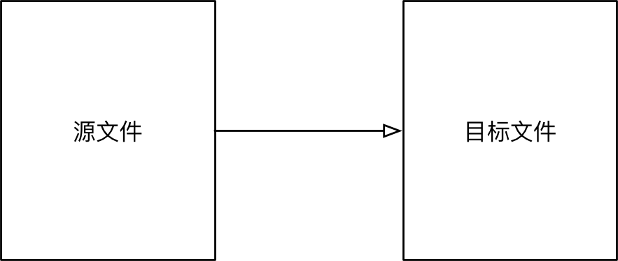

文件
目标
- 文件的概念
- 文件的基本操作
- 文件/文件夹的常用操作
- 文本文件的编码方式
01. 文件的概念
1.1 文件的概念和作用
- 计算机的 文件，就是存储在某种 长期储存设备 上的一段 数据
- 长期存储设备包括：硬盘、U 盘、移动硬盘、光盘…
文件的作用
将数据长期保存下来，在需要的时候使用
| CPU | 内存 | 硬盘 |
|---|---|---|
   |
   |
   |
1.2 文件的存储方式
- 在计算机中，文件是以 二进制 的方式保存在磁盘上的
文本文件和二进制文件
- 文本文件
- 可以使用 文本编辑软件 查看
- 本质上还是二进制文件
- 例如：python 的源程序
- 二进制文件
- 保存的内容 不是给人直接阅读的，而是 提供给其他软件使用的
- 例如：图片文件、音频文件、视频文件等等
- 二进制文件不能使用 文本编辑软件 查看
02. 文件的基本操作
2.1 操作文件的套路
在 计算机 中要操作文件的套路非常固定，一共包含三个步骤：
- 打开文件
- 读、写文件
- 读 将文件内容读入内存
- 写 将内存内容写入文件
- 关闭文件
2.2 操作文件的函数/方法
- 在
Python中要操作文件需要记住 1 个函数和 3 个方法
| 序号 | 函数/方法 | 说明 |
|---|---|---|
| 01 | open | 打开文件，并且返回文件操作对象 |
| 02 | read | 将文件内容读取到内存 |
| 03 | write | 将指定内容写入文件 |
| 04 | close | 关闭文件 |
open函数负责打开文件，并且返回文件对象read/write/close三个方法都需要通过 文件对象 来调用
2.3 read 方法 —— 读取文件
open函数的第一个参数是要打开的文件名（文件名区分大小写）- 如果文件 存在，返回 文件操作对象
- 如果文件 不存在，会 抛出异常
read方法可以一次性 读入 并 返回 文件的 所有内容close方法负责关闭文件- 如果 忘记关闭文件，会造成系统资源消耗，而且会影响到后续对文件的访问
- 注意：
read方法执行后，会把 文件指针 移动到 文件的末尾
1 | # 1. 打开 - 文件名需要注意大小写 |
提示
- 在开发中，通常会先编写 打开 和 关闭 的代码，再编写中间针对文件的 读/写 操作！
文件指针（知道）
文件指针 标记 从哪个位置开始读取数据
第一次打开 文件时，通常 文件指针会指向文件的开始位置
当执行了
read方法后，文件指针会移动到读取内容的末尾- 默认情况下会移动到 文件末尾
思考
- 如果执行了一次
read方法，读取了所有内容，那么再次调用read方法，还能够获得到内容吗？
答案
- 不能
- 第一次读取之后，文件指针移动到了文件末尾，再次调用不会读取到任何的内容
2.4 打开文件的方式
open函数默认以 只读方式 打开文件，并且返回文件对象
语法如下：
1 | f = open("文件名", "访问方式") |
| 访问方式 | 说明 |
|---|---|
| r | 以只读方式打开文件。文件的指针将会放在文件的开头，这是默认模式。如果文件不存在，抛出异常 |
| w | 以只写方式打开文件。如果文件存在会被覆盖。如果文件不存在，创建新文件 |
| a | 以追加方式打开文件。如果该文件已存在，文件指针将会放在文件的结尾。如果文件不存在，创建新文件进行写入 |
| r+ | 以读写方式打开文件。文件的指针将会放在文件的开头。如果文件不存在，抛出异常 |
| w+ | 以读写方式打开文件。如果文件存在会被覆盖。如果文件不存在，创建新文件 |
| a+ | 以读写方式打开文件。如果该文件已存在，文件指针将会放在文件的结尾。如果文件不存在，创建新文件进行写入 |
提示
- 频繁的移动文件指针，会影响文件的读写效率，开发中更多的时候会以 只读、只写 的方式来操作文件
写入文件示例
1 | # 打开文件 |
2.5 按行读取文件内容
read方法默认会把文件的 所有内容 一次性读取到内存- 如果文件太大，对内存的占用会非常严重
readline 方法
readline方法可以一次读取一行内容- 方法执行后，会把 文件指针 移动到下一行，准备再次读取
读取大文件的正确姿势
1 | # 打开文件 |
2.6 文件读写案例 —— 复制文件
目标
用代码的方式，来实现文件复制过程

小文件复制
- 打开一个已有文件，读取完整内容，并写入到另外一个文件
1 | # 1. 打开文件 |
大文件复制
- 打开一个已有文件，逐行读取内容，并顺序写入到另外一个文件
1 | # 1. 打开文件 |
03. 文件/目录的常用管理操作
- 在终端/文件浏览器、 中可以执行常规的文件/目录管理操作，例如：
- 创建、重命名、删除、改变路径、查看目录内容、……
- 在
Python中，如果希望通过程序实现上述功能，需要导入os模块
文件操作
| 序号 | 方法名 | 说明 | 示例 |
|---|---|---|---|
| 01 | rename | 重命名文件 | os.rename(源文件名, 目标文件名) |
| 02 | remove | 删除文件 | os.remove(文件名) |
目录操作
| 序号 | 方法名 | 说明 | 示例 |
|---|---|---|---|
| 01 | listdir | 目录列表 | os.listdir(目录名) |
| 02 | mkdir | 创建目录 | os.mkdir(目录名) |
| 03 | rmdir | 删除目录 | os.rmdir(目录名) |
| 04 | getcwd | 获取当前目录 | os.getcwd() |
| 05 | chdir | 修改工作目录 | os.chdir(目标目录) |
| 06 | path.isdir | 判断是否是文件 | os.path.isdir(文件路径) |
提示：文件或者目录操作都支持 相对路径 和 绝对路径
04. 文本文件的编码格式（科普）
- 文本文件存储的内容是基于 字符编码 的文件，常见的编码有
ASCII编码，UNICODE编码等
Python 2.x 默认使用
ASCII编码格式
Python 3.x 默认使用UTF-8编码格式
4.1 ASCII 编码和 UNICODE 编码
ASCII 编码
计算机中只有
256个ASCII字符一个
ASCII在内存中占用1 个字节的空间8个0/1的排列组合方式一共有256种，也就是2 ** 8
 

UTF-8 编码格式
- 计算机中使用 1~6 个字节 来表示一个
UTF-8字符，涵盖了 地球上几乎所有地区的文字 - 大多数汉字会使用 3 个字节 表示
UTF-8是UNICODE编码的一种编码格式
4.2 Ptyhon 2.x 中如何使用中文
Python 2.x 默认使用
ASCII编码格式
Python 3.x 默认使用UTF-8编码格式
- 在 Python 2.x 文件的 第一行 增加以下代码，解释器会以
utf-8编码来处理 python 文件
1 | # *-* coding:utf8 *-* |
这方式是官方推荐使用的！
- 也可以使用
1 | # coding=utf8 |
unicode 字符串
- 在
Python 2.x中，即使指定了文件使用UTF-8的编码格式，但是在遍历字符串时，仍然会 以字节为单位遍历 字符串 - 要能够 正确的遍历字符串，在定义字符串时，需要 在字符串的引号前，增加一个小写字母
u，告诉解释器这是一个unicode字符串（使用UTF-8编码格式的字符串）
1 | # *-* coding:utf8 *-* |